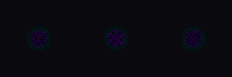

shader_evolve_smoke_001_g01_portal_swirl_2d_001
cov 0.093 | motion 0.013 | contrast 0.022 |
color 0.123 | edge 0.006 | center 0.000
gates
- weak contrast
- coverage low: increase radius/thickness/edge_width/opacity, or reduce dissolve threshold
- contrast low: widen color separation, add hotter core/edge, or reduce background-like colors
- too smooth: increase frequency/noise/rune/hex/jaggedness or sharpen edge_width
params
{
"color_outer": [
0.005471320503757912,
0.0,
0.06039307254313726
],
"color_mid": [
0.0,
0.10577229592074697,
0.07190967886336994
],
"color_inner": [
0.24404356376413716,
0.00967810146056751,
0.42181398916171653
],
"color_void": [
0.033495391813405,
0.0,
0.02521360880462776
],
"radius": 0.3003,
"swirl": 8.3594,
"spin_speed": 4.3989,
"depth_pulse": 0.932,
"arms": 5.8248,
"arm_strength": 0.926,
"opacity": 0.8876
}